Electronics production
It's the 4th week of the Fab Academy, we're now exploring the process of electronics production: How to make a in-circuit programmer from a printed circuit board (PCB) and several electronic components, a programmer in wich I'll send code to pilot my future electronic projects.

Making an in-circuit programmer
In-system programming (ISP), also called in-circuit serial programming (ICSP), is the ability of some programmable logic devices, microcontrollers, and other embedded devices to be programmed while installed in a complete system, rather than requiring the chip to be programmed prior to installing it into the system.
FTDI & UPDI
I decided to make an FTDI USB-FT230XS-serial. I have to admit that my choice isn't clear at this point. I could have chosen to make another model of programmer, any of them. It's almost impossible to make a thoughtful choice now because I don't know yet what kind of electronic architecture I'll need later. Let's say that the most important thing now is learning how to create a programmer, any of them, and to be able to do it again later with a more specific electronic project.
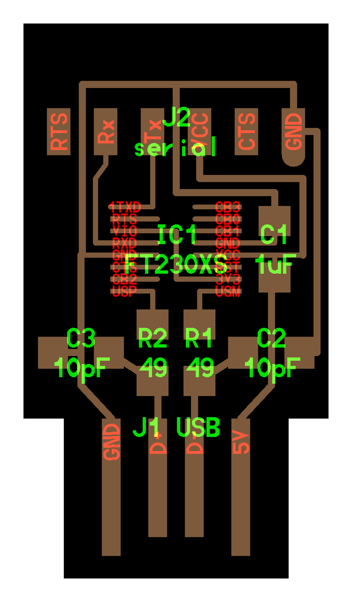
To program this FTDI USB-FT230XS-serial chip, I also need a UPDI (Unified Program and Debugging Interface) which is an interface for programming and debugging other devices, such as the FTDI that I use.
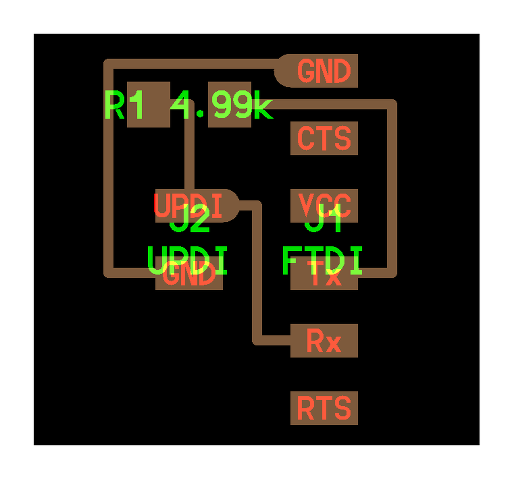
Files preparation
We always need two differents files to mill a board, one for the traces and one for the outline, because these two tasks need differents end-mills: a 1/32 for the outline and a 1/64 (wich is super fragile) for the traces.
- Import the PNG in Fabmodules
- Output:
Roland mill (.rml) - Process for the traces:
PCB traces (1/64) - Process for the outline:
PCB outline (1/32) - Machine:
SRM-20 - Speed (mm/s):
4 - x0, y0, z0:
0, 0, 0 - zjog (mm):
12 - Direction:
climborconventional(climbis preferred by default) Calculate&Save
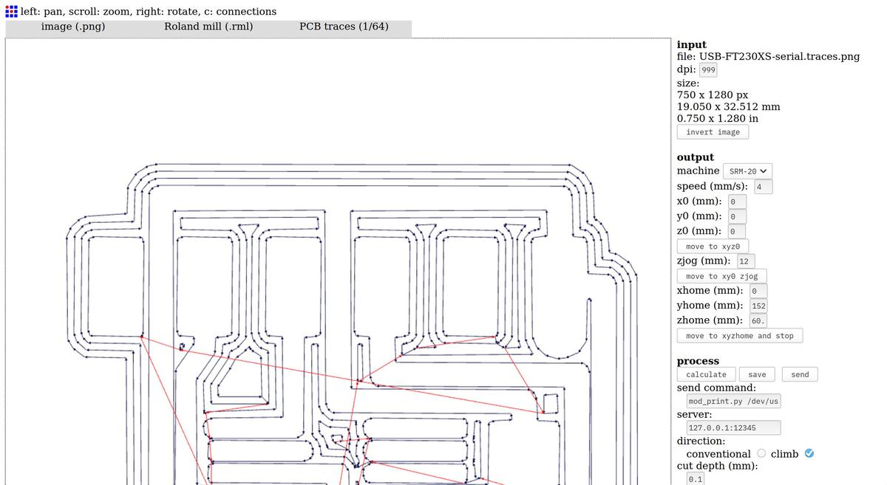
Files
Milling process
At Fab Lab Barcelona, we use a Roland SRM-20 Compact Milling Machine to mill PCBs. The machine is compact (as its name suggests) and very precise.
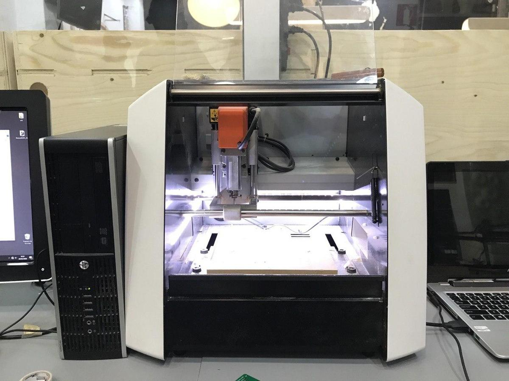
Cover the back of the PCB with double-sided tape to make it stick to the surface of the milling machine, we don't want it to move. Don't overlap the layers of tape, this would create different levels and therefore a lack of precision on the Z axis.
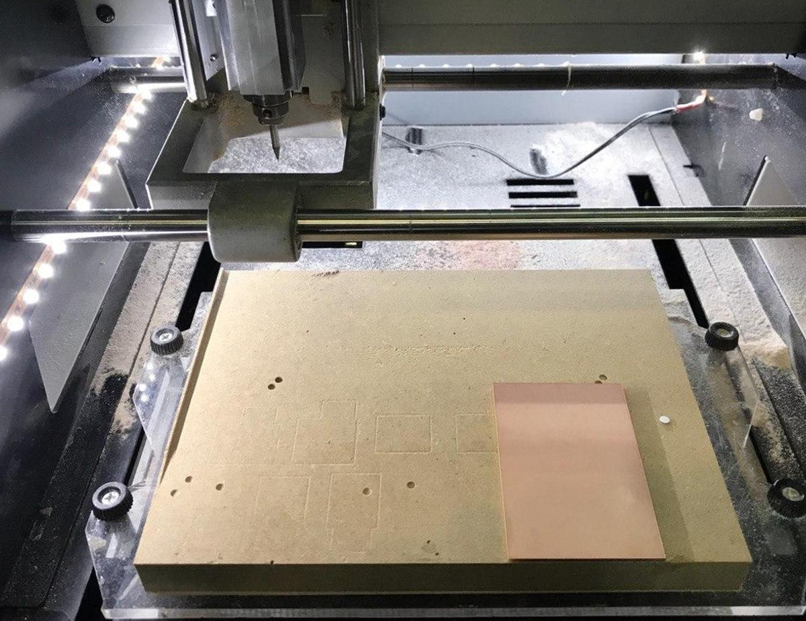
Place the PCB inside the milling machine, on the board (parallel to the edge is better, as it is easier to optimize the space on the PCB) and mount the drill on the machine. A 1/32 for the outline or a 1/64 for the traces.
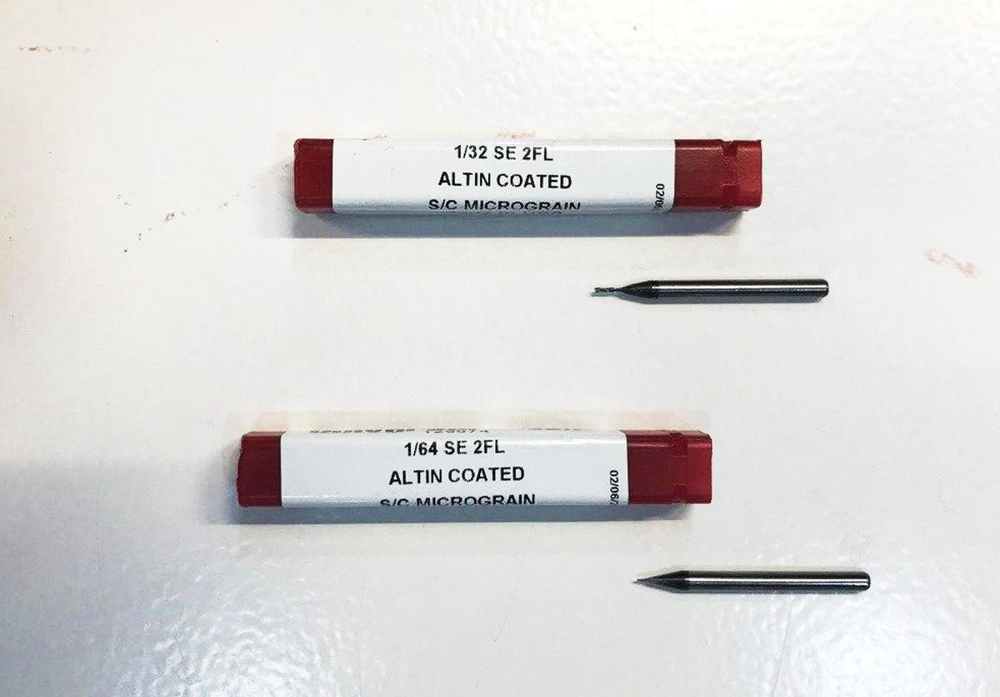
Configure the X and Y axes according to the size of the design and the space available on the PCB.And then, configure the Z axis. This is one of the most important part of the milling processs. The end-mill is supposed to be placed perfectly on the surface of the PCB so the machine knows how deep it can go when milling the paths. If not, it will either damage the board or not mill it enough.
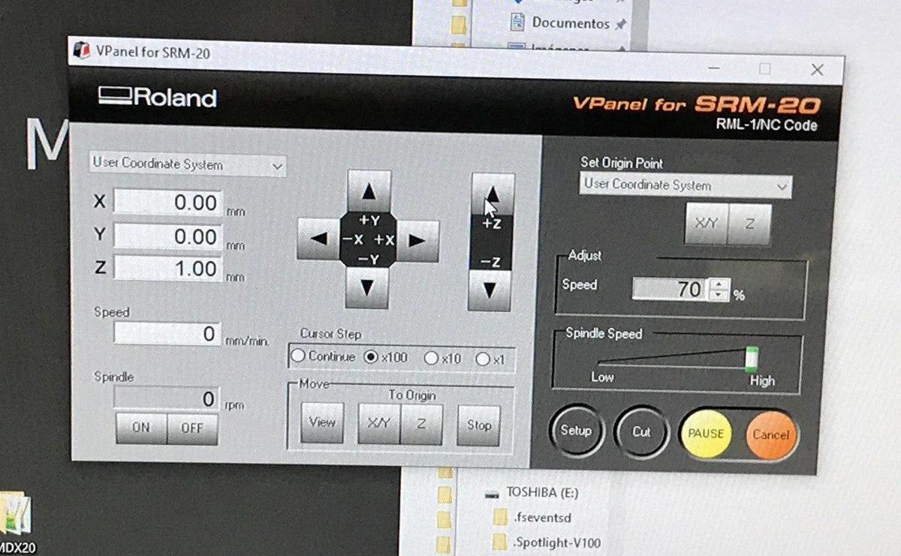
To set the Z axis correctly:
- Screw the end-mill at an approximate height first
- Move the tool to the X/Y origin while being sure the tool is high enough to not scratch the surface when moving it and press the
Set origin point: X/Ybutton - Unscrew the end-mill and let it descend slowly until it touches the PCB
- Press the
Set origin point: Zbutton - Run the spindle and see if the PCB surface is being milled by the end-mill
- If it doesn't, set the
Cursor Steptox1(to operate carefully) and go down one step at a time until you reach the PCB surface Set origin point: Zagain with the updated position
Take care to always lift the Z axis before moving on the X and Y axis. If not, the end-mill will scratch the surface and destroy the PCB.
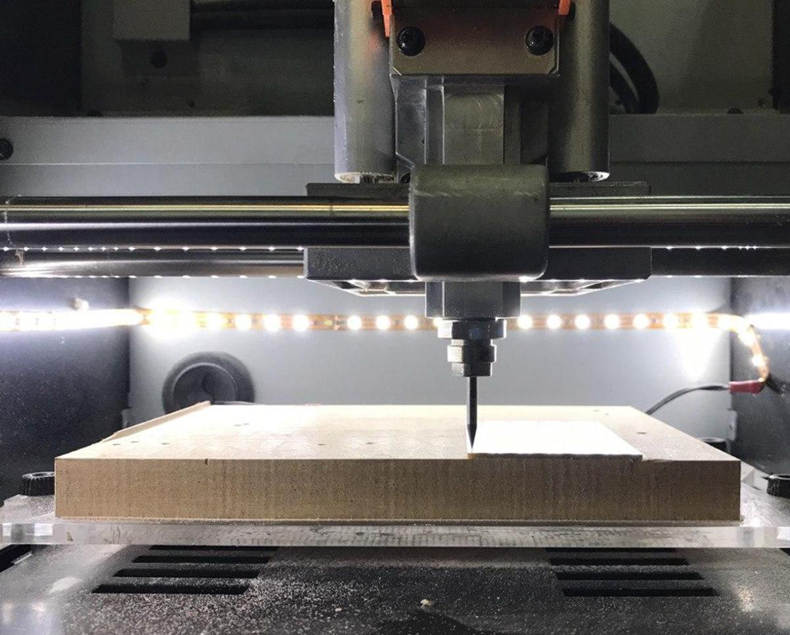
When the end mill and the XYZ axes are configured, press the cut button to load the appropriate file, then press the setup button to start the milling process.
In resume, it's needed to run the cut two times. First time for the traces, using the 1/64 end-mill. Then a second time for the outline using the 1/32 end-mill. It implies that you'll have to change the file and the end-mill at the middle of the milling process. Don't modify the X/Y axes by doing it or you'll lose the exact position of your design. Only re-setup the Z axis when the 1/32 end-mill is in the machine.
As you can see on the video above, I teamed up with Tue, Marco and Roger in order to save time and materials. Machines are always super busy around here in Fab Lab Barcelona.
We had some issues during the process:
- The first time we milled our boards, the Z axis wasn't defined correctly and some un-milled parts remained on the PCB after the process. It's easy to spot them, they are shiny compare to the rest. We had to re-mill with a slightly different Z axis value, to mill a little deeper.
- We forgot to lift the tool on the Z axis before moving it to the X/Y origin… We scratched the board and we had to re-mill to damaged parts.
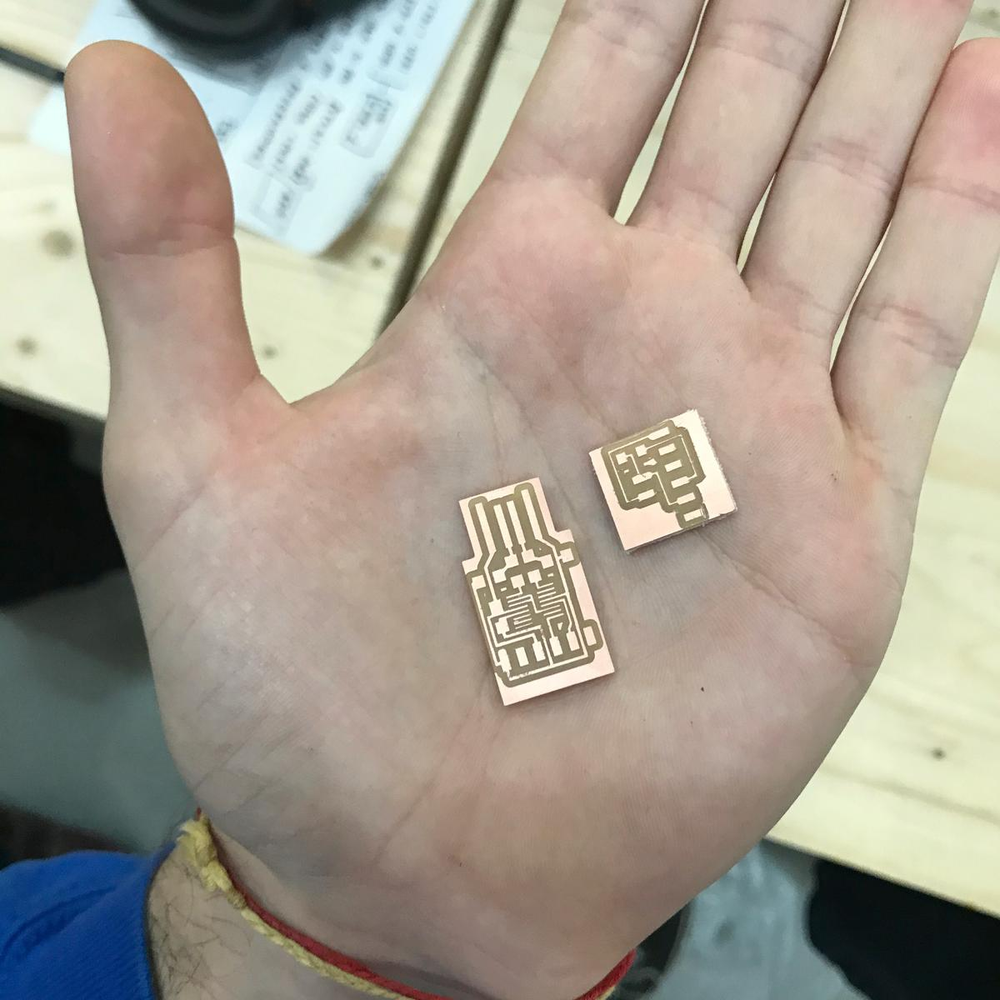
It is a good practice to test the board with a multimeter between to milling and the soldering, to be sure that the circuits conduct the electricity as they should.
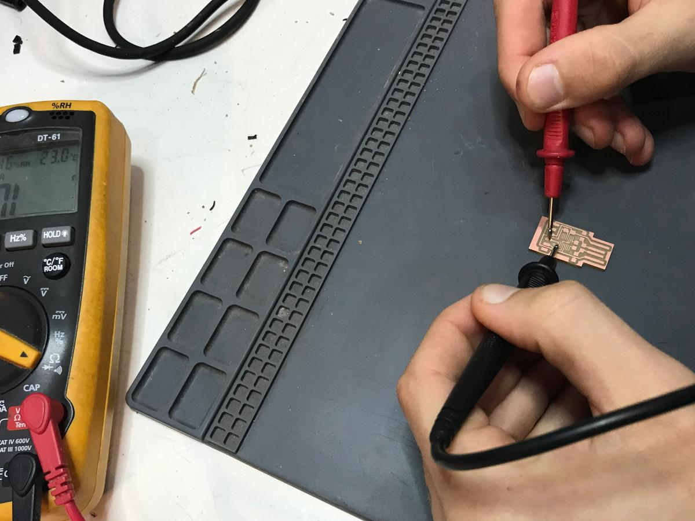
Soldering components
Soldering is a process in which two or more items are joined together by melting and putting a filler metal (solder) into the joint, the filler metal having a lower melting point than the adjoining metal.
Once I had the board ready, I could start the soldering process. But before that, I first start the collect the components I needed and sticked them to a sheet of paper to be sure not to lose them.
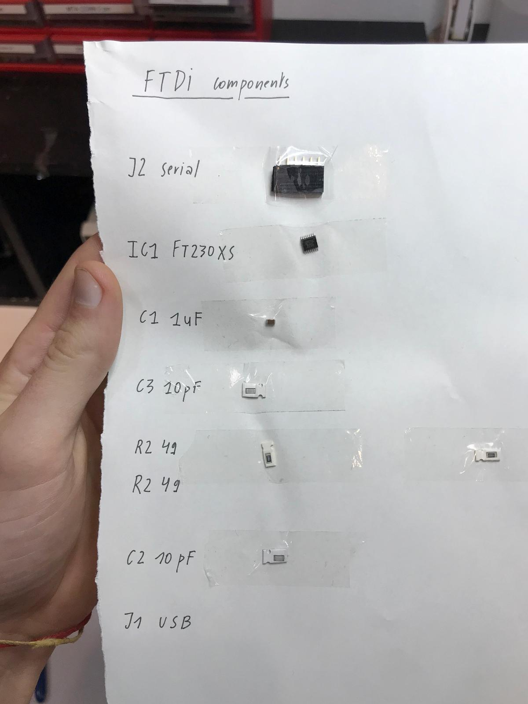
To solder electronics components on a board, it is easier to start with the central parts to the external parts and from the most complex to the simplest.
The first few minutes of soldering are a bit frustrating, the parts are very small and precision is not easy on this scale. And we've to begin with the most complex part (to get it done before continuing). But once I got used to it, it became a very pleasant moment of mindfulness.

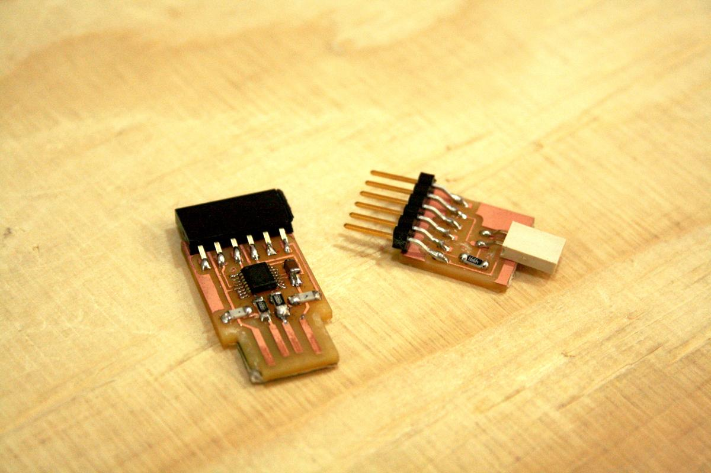
Testing the compact milling machine